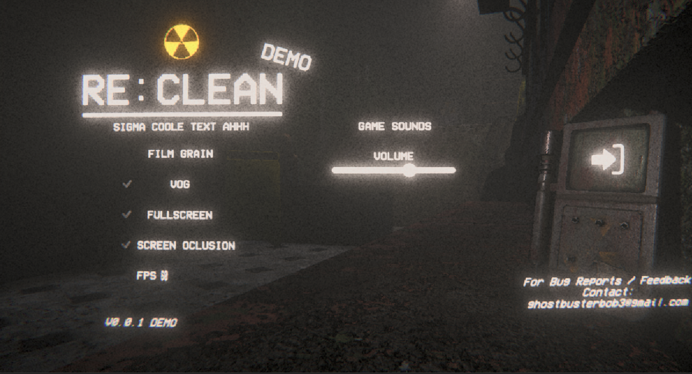
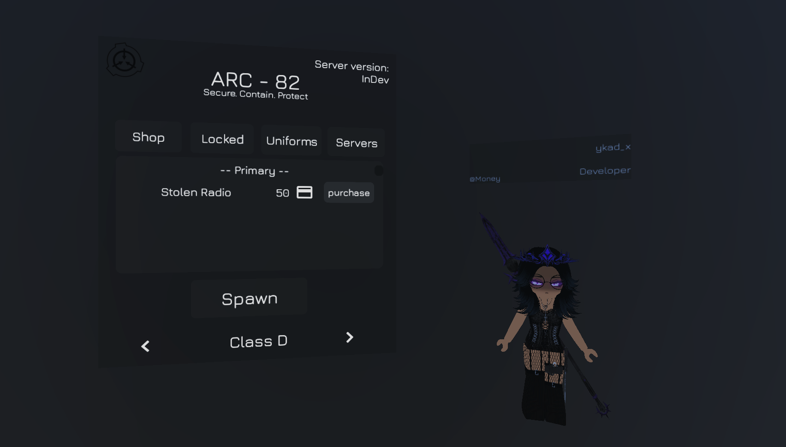
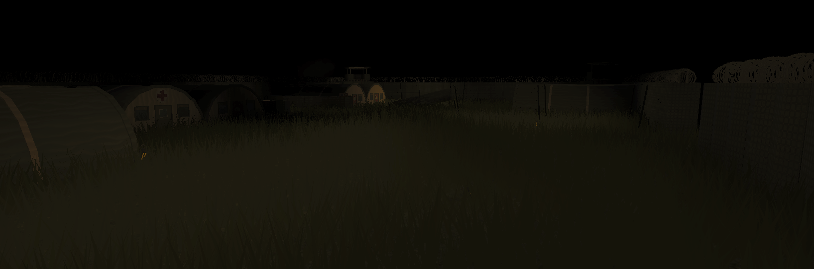
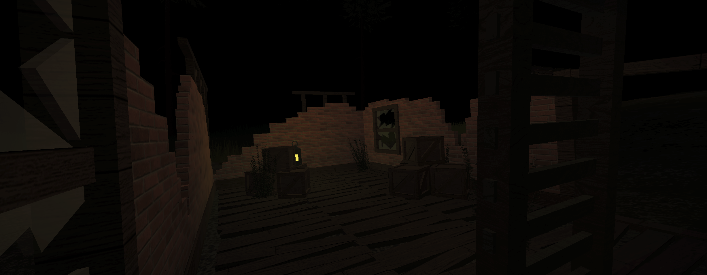
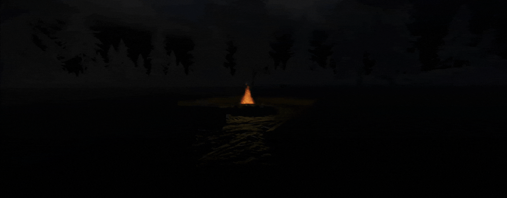
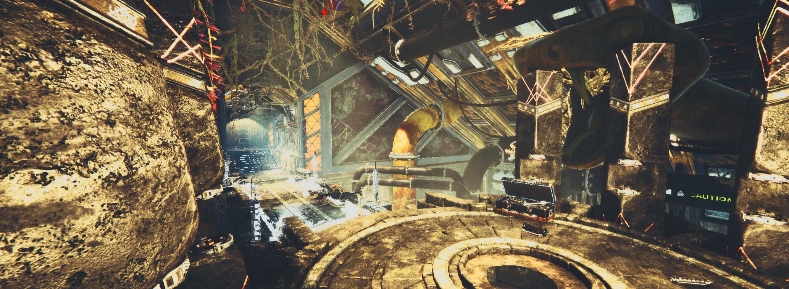
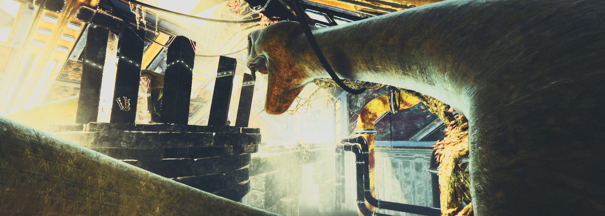
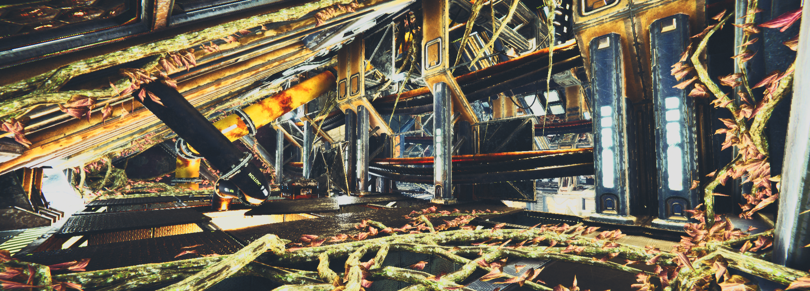
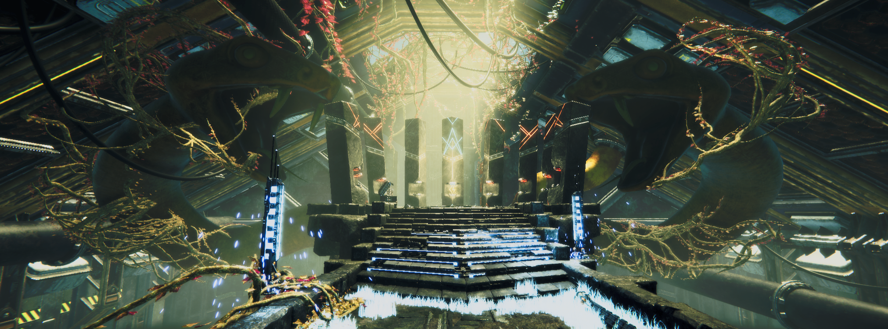

A selection of game projects I have worked on in Roblox Studio and Unity,
focusing on scripting, game design, and UI.
☢ RE:CLEAN In Dev
Role: Gameplay programmer, systems designer
Narrative‑driven Roblox experience focused on tense atmosphere, exploration,
and scripted events. I work on gameplay scripting, event logic, and UI.



ARC - 82 In Dev
Role: UI / UX, scripting
Experimental Roblox project with a strong focus on UI and smooth game feel.
I design and implement menus, HUD elements, and interaction feedback.


The Hunt Roblox Experience
Role: Gameplay programmer, level logic
Cooperative Roblox experience focused on exploration, progression, and replayability.
I implemented game logic, objectives, and player feedback systems.




TORTEX In Dev
Role: Prototyping, gameplay systems
Early‑stage project exploring combat and mission‑based gameplay.
I prototype mechanics quickly, test ideas, and iterate on layout and pacing.
Tower Defence Simulator Unity Project
Role: Unity developer (C#)
Tower defence prototype built in Unity, focused on wave systems and tower behaviour.
I wrote C# scripts for enemy waves, tower logic, and basic UI.





Hel End Strife Unity School Project
Role: Unity developer, gameplay scripting
School project created in Unity, aimed at delivering a complete small game.
I worked on gameplay scripts, basic level design, and polishing interactions.